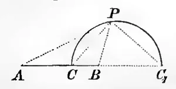
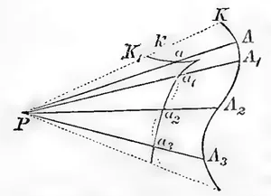
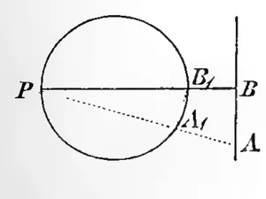

Chapter I — Geometrical Loci¶
Erstes Kapitel: Geometrische Oerter (pp. 5–48)

Section 1: A. Geometrical Loci for Points (Loci a–k)
Chapter I — Loci · A. Loci of Points

Section 2: Multiplication of Curves
Multiplication of Curves (Homothety, pp. 22–27, Problems 117–149)
Section 3: The Method of Similitude
The Method of Similitude (pp. 28–33, Problems 150–191)

Section 4: Inverse Figures
Inverse Figures (pp. 34–38, Problems 192–201)
Section 5: Geometrical Loci in General
Geometrical Loci in General (pp. 39–41, Problems 202–219)
Section 6: B. Geometrical Loci for Lines (Loci l–p)
Chapter I — B. Loci of Lines (Envelopes & Tangential Conditions)